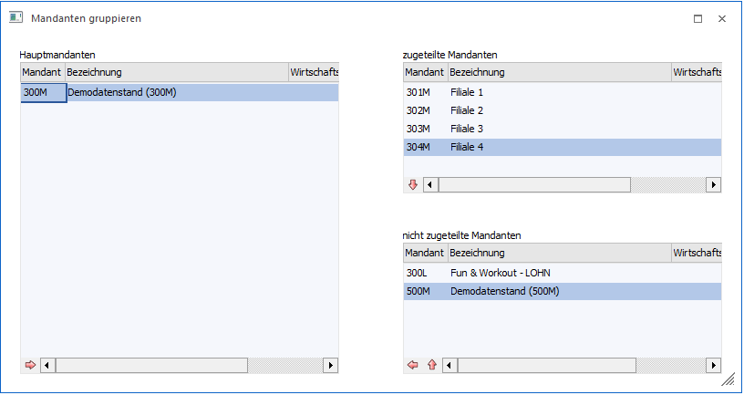
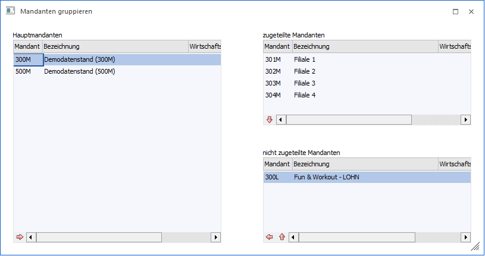
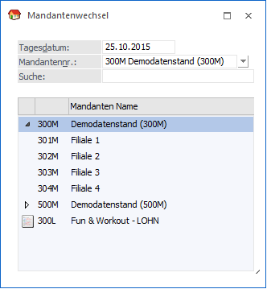

Über den Menüpunkt…
1 Datei
1 Mandanten gruppieren
… gibt es die Möglichkeit, Mandanten "zusammenzufassen".
Diese Funktion kann dann angewendet werden, wenn es z.B. mehrere Mandanten mit jeweils mehreren Wirtschaftsjahren gibt, die auch noch nicht in einen Mandanten zusammengefasst wurden. Der Vorteil der Zusammenfassung besteht darin, dass in der Mandantenauswahl nicht mehr so viele Mandanten angezeigt werden - damit wird die Auswahl übersichtlicher.

Vorgangsweise
Damit ein Hauptmandant und seine dazugehörigen Mandanten definiert werden können, muss wie folgt vorgegangen werden:
ü Zuerst muss aus der Tabelle "nicht zugeteilte Mandanten" der Hauptmandant gewählt und mit dem "nach Links"-Button in die Tabelle "Hauptmandanten" transferiert werden.
ü In der Tabelle "nicht zugeteilte Mandanten" wird dann der erste Mandant ausgewählt, der dem Hauptmandant zugeordnet werden soll. Jetzt kann dieser Mandant mit den "nach Oben"-Button in die Tabelle "zugeteilte Mandanten" transferiert werden.
ü Wenn in der Tabelle "Hauptmandanten" mehrere Einträge vorhanden sind, werden in der Tabelle "zugeteilte Mandanten" die jeweils zugeordneten Mandanten angezeigt. Mit den "nach Unten"-Button kann ein zugeteilter Mandant wieder "entkoppelt" werden, d.h. dieser Mandant wird dann wieder als "normaler" Mandant behandelt.
ü Das gleiche gilt auch für Hauptmandanten; wird dieser durch den "nach Rechts"-Button wieder in die Tabelle "nicht zugeteilte Mandanten" verschoben, wird wieder ein "normaler" Mandant daraus.
ü Durch Anklicken des OK-Buttons werden die Zuordnungen gespeichert. Durch Anklicken des ENDE-Buttons wird das Fenster geschlossen. Durch Anklicken des Vergessen-Buttons werden alle durchgeführten Änderungen verworfen.
Beispiel für die Zuordnung zu Hauptmandanten

Wenn folgende Einstellung vorgenommen wird, dann wird beim Mandantenwechsel folgendes angezeigt:

Die Mandanten 300M und 500M sind jeweils Hauptmandanten. Unter dem Mandanten 300M werden die zugeordneten Mandanten (ohne Symbol) angezeigt. Der Mandant 300L ist ein nicht zugeordneter Mandant.
Buttons
Ø Ok
Durch Anwahl des Buttons "Ok" bzw. der Taste F5 werden die Gruppierungen gespeichert.
Ø Ende
Durch Anwahl des Buttons "Ende" bzw. der Taste ESC wird das Fenster geschlossen und alle nicht gespeicherten Änderungen verworfen.
Ø Vergessen
Mit Hilfe des Buttons "Vergessen" werden alle nicht gespeicherten Eingaben verworfen.